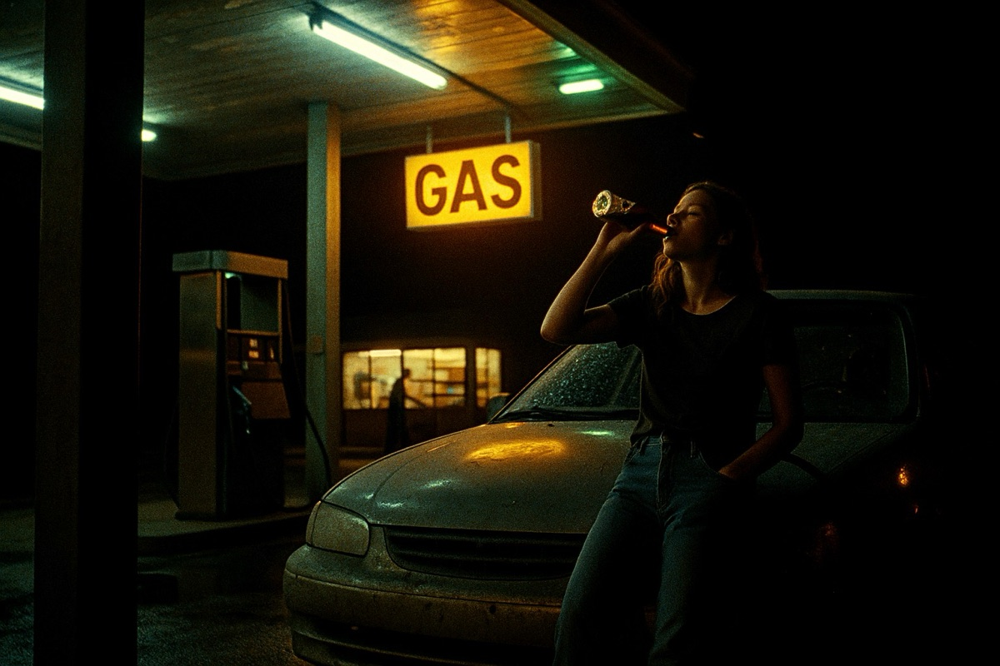
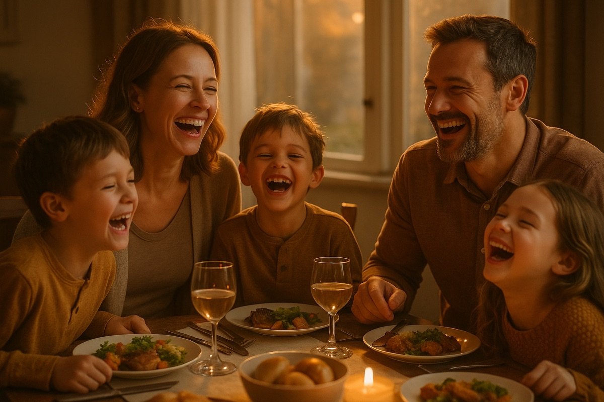
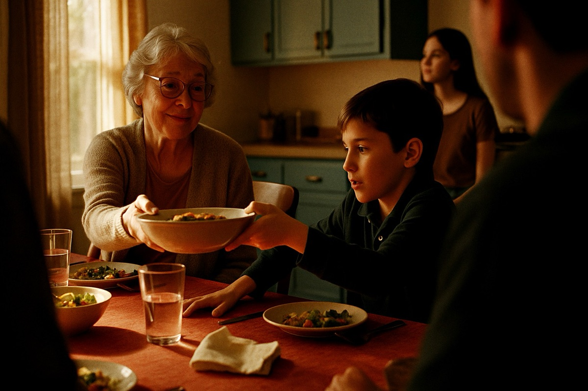
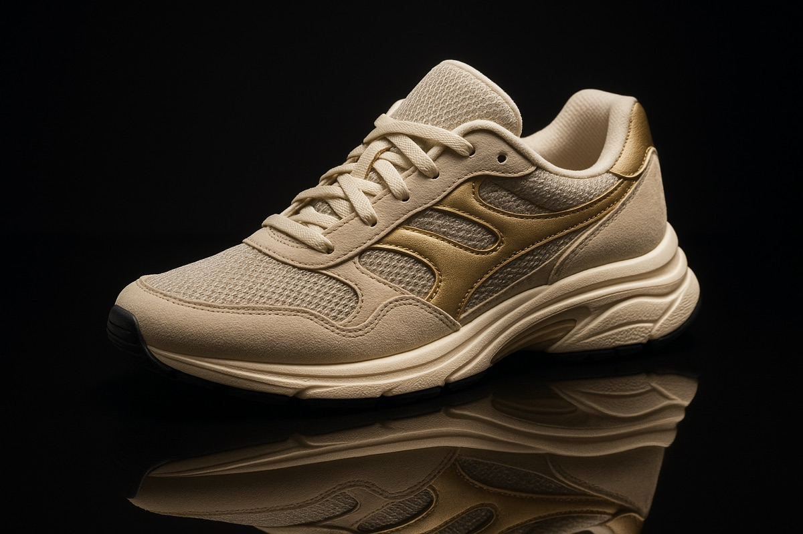
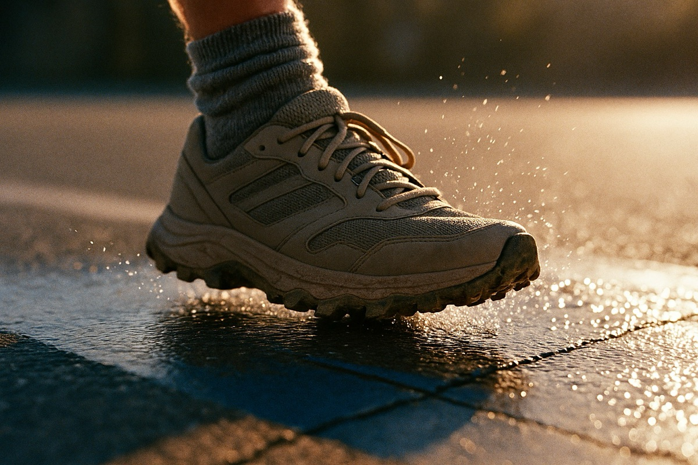
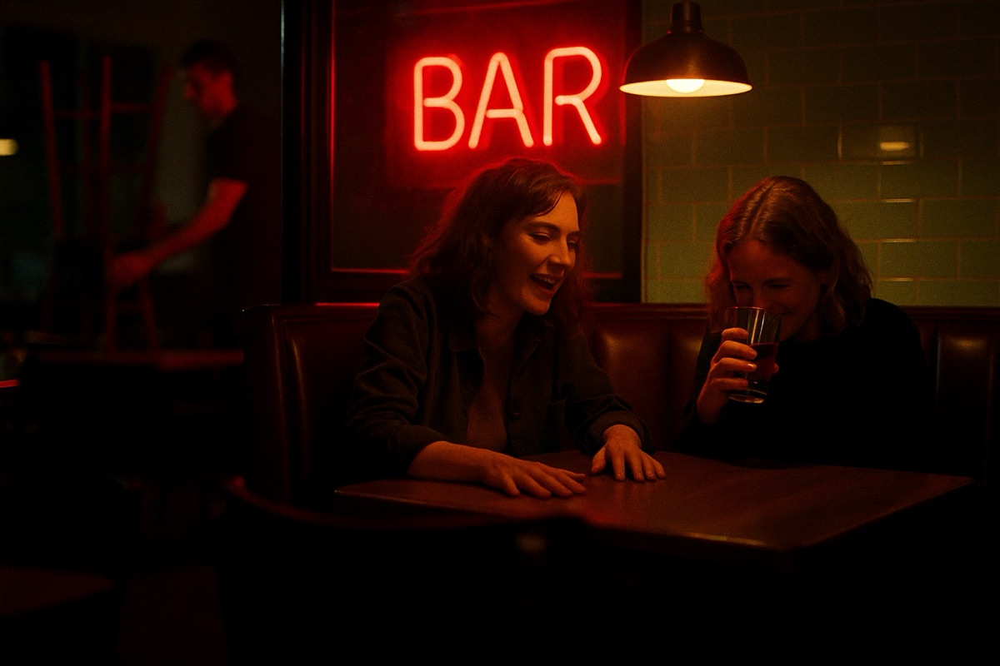
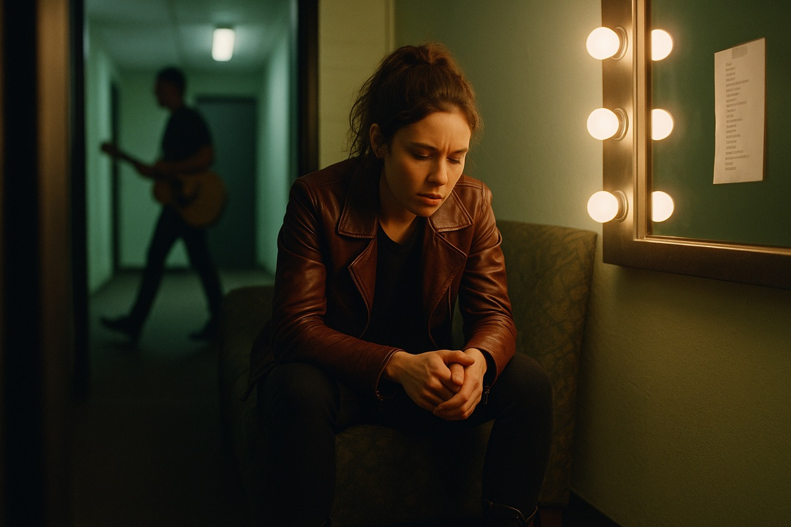

A complete prompting system for commercial treatment imagery that reads like frames grabbed from the finished :30. Motion-picture cameras and stocks, one motivated light source, casts that behave like people mid-take, one believable imperfection per frame.
Get the system: $39
Every image on this page was generated with prompts from the system, exactly as they ship. No retouching.
You generate imagery for a deck and it comes back glossy, symmetrical, over-smiled, and dead.
Perfect teeth on everyone. A flattering key on every face. A cast lineup grinning at the camera. Boards like that don't just look cheap next to real reference, they quietly tell the agency the director didn't care enough to fix it.
The fix isn't a better model or a magic keyword. It's cinematography. A real frame from a real commercial obeys physics: one dominant light source, one focus plane, one story beat, a cast that doesn't know where the camera is. This system encodes those rules so the model has no room to drift back to stock.
The only variable below is the system.




Straight out of the starter bank, unretouched.

